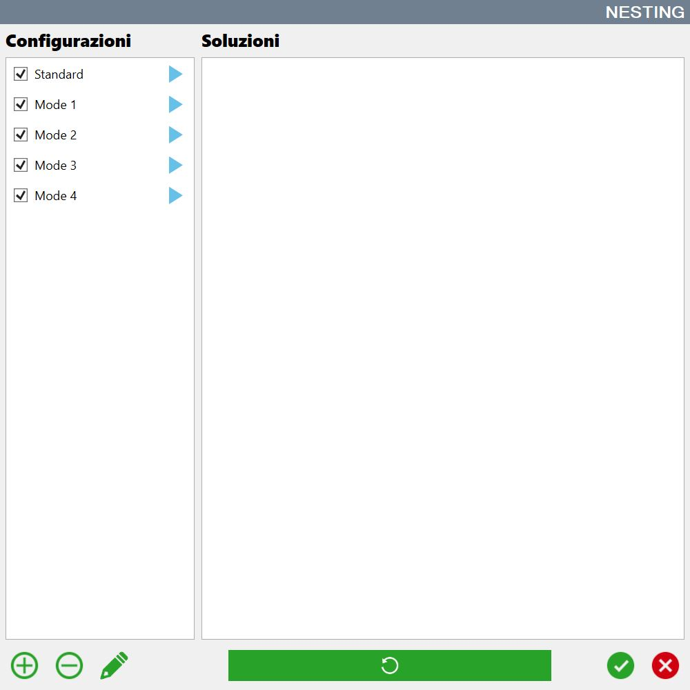

Die Verwendung des automatischen Nestings ist besonders nützlich, wenn sehr viele Werkstücke bearbeitet werden müssen und die verschiedenen Kombinationen nicht mehr einfach manuell verwaltet werden können.
Je nach eingestellten Parametern können unterschiedliche Lösungen entstehen. Diese werden auf dem Bildschirm angezeigt und der Bediener kann die bevorzugte Konfiguration auswählen.

Schaltflächen
/0.04.png) | Hinzufügen |
/0.05.png) | Löschen |
/0.06.png) | Bearbeiten |
/0.07.png) | Ausführung |
Konfiguration bearbeiten
Beim automatischen Nesting können die Parameter angepasst werden, die für die Berechnung der Werkstückpositionierung innerhalb des einer Konfiguration zugeordneten Arbeitsbereichs verwendet werden.
Je nach Art der zu bearbeitenden Werkstücke können bessere und leistungsfähigere Strategien zur Verfügung stehen.
/0.11.png)
Name | Name der Konfiguration, die in der Liste erscheint. |
Plattenabstand | Abstand, den die Werkstücke bei der Positionierung vom Plattenrand einhalten müssen. |
Anz. zu durchsuchender Lösungen | Anzahl der vom Nesting berechneten Lösungen. Aus allen berechneten Lösungen wird die beste ausgewählt. |
Anz. Verschiebeversuche | Anzahl der Versuche, bei denen das Werkstück verschoben wird, wenn es nicht in den Plattenumfang passt. |
Verschiebewert | Wert, um den das Werkstück verschoben wird, um zu versuchen, es innerhalb des Plattenumfangs zu positionieren. |
Anz. Versuche auf derselben Platte | Anzahl der Versuche, das Werkstück innerhalb desselben Umfangs zu positionieren, wenn es nicht hineinpasst. |
Timeout Lösungsberechnung | Maximal zulässige Zeit für die Berechnung jeder einzelnen Lösung. |
Listenreihenfolge verwenden | Erzwingt den Versuch, die Werkstücke innerhalb des Umfangs in der Reihenfolge zu positionieren, in der sie in der Werkstückliste stehen. |
Benutzerdefinierte Reihenfolge verwenden | Ermöglicht die Auswahl der Reihenfolge, in der versucht wird, die Werkstücke anhand bestimmter Eigenschaften innerhalb des Plattenumfangs zu positionieren. |
Werkstück erzwingen, bevor zum nächsten gewechselt wird | Ermöglicht die Auswahl, ob versucht werden soll, das Werkstück an verschiedenen Stellen innerhalb des Plattenumfangs zu positionieren, oder ob ohne weitere Versuche zum nächsten Werkstück gewechselt wird. |
Fester Startpunkt | Ermöglicht die Auswahl des Punkts am Umfang, von dem aus mit dem Einfügen der Werkstücke begonnen wird. |
Zeilen-/Spaltenmodus festlegen | Ermöglicht die Auswahl, ob beim Einfügen der Werkstücke eine Logik beibehalten werden soll, nach der sie in Zeilen, Spalten oder zufällig angeordnet werden. |
Werkstückdrehmodus | Ermöglicht die Auswahl der Logik, nach der Werkstücke bei Positionierungsversuchen innerhalb des Plattenumfangs gedreht werden können. |
Größtes inneres Rechteck verwenden | Wenn aktiviert, werden die Werkstücke innerhalb des flächengrößten Rechtecks positioniert, das im Umfang enthalten ist. |
Deep Nesting aktivieren | Wenn deaktiviert, werden die Werkstücke so auf der Platte positioniert, dass die Nutzung des Materialhandhabungssystems mit Saugnäpfen zur Kollisionsauflösung optimiert wird. |
Nesting ausführen
Durch Drücken des blauen Pfeils neben jedem Eintrag in der Liste wird das Nesting mit dieser Konfiguration berechnet.
Eine Vorschau des Ergebnisses wird im rechten Bereich eingefügt. Sie zeigt die Anordnung der Werkstücke innerhalb des Umfangs und den Prozentsatz der Plattenfläche, der von den Werkstücken bedeckt wird.
/0.08.png)
Wenn die Werkstückanordnung nicht zufriedenstellend ist, kann der blaue Pfeil erneut gedrückt werden, um das Ergebnis neu zu berechnen.
Nach Ausführung aller Nesting-Konfigurationen werden die Ergebnisse so angeordnet, dass zuerst diejenigen angezeigt werden, die die größte Plattenfläche nutzen.
/0.09.png)
Nach Auswahl der bevorzugten Konfiguration die Bestätigungsschaltfläche drücken. Die Werkstücke werden gemäß der gewählten Anordnung auf der Platte positioniert. Die Position der Werkstücke im Arbeitsbereich kann weiterhin vom Bediener geändert werden.
/0.10.png)